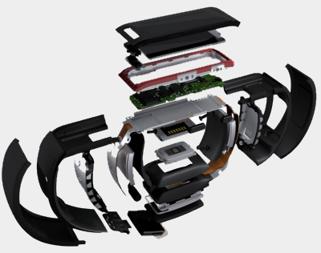
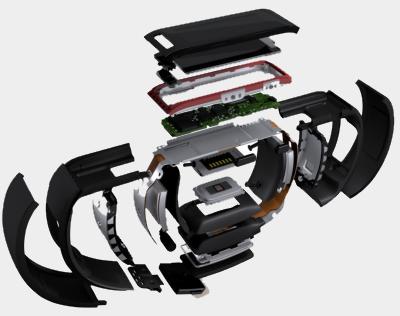

Gesticulatr
Gesticulatr
Microsoft Band + Signalr

Band + Signalr
This is the website that runs Signalr in Azure.
Signalr + IoT
We also use this to send the data down to an IoT device. It moves...

This is the website that runs Signalr in Azure.
We also use this to send the data down to an IoT device. It moves...